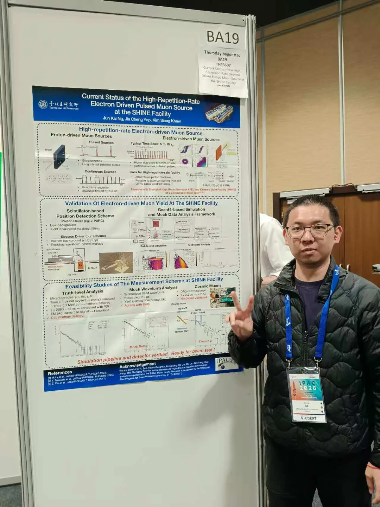
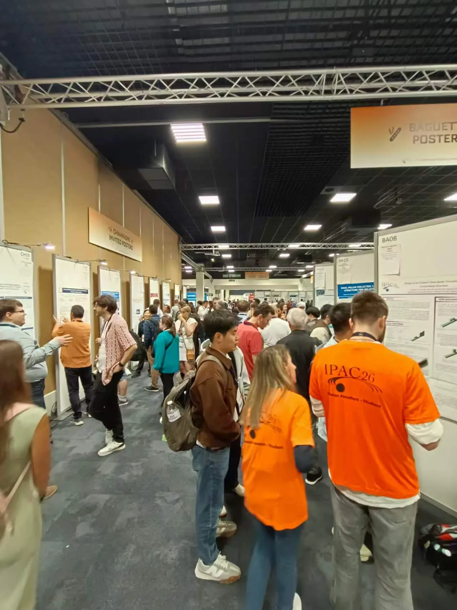
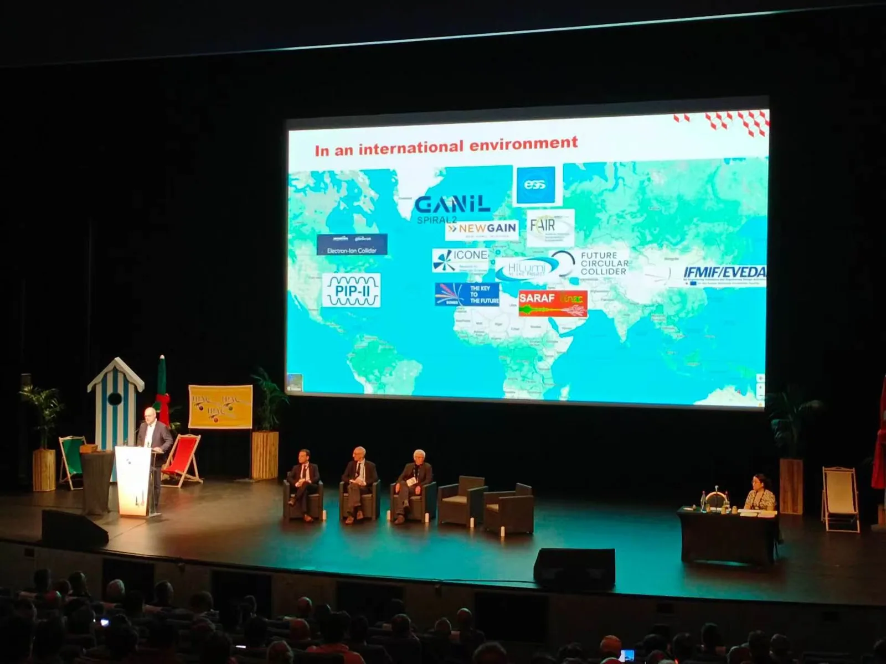
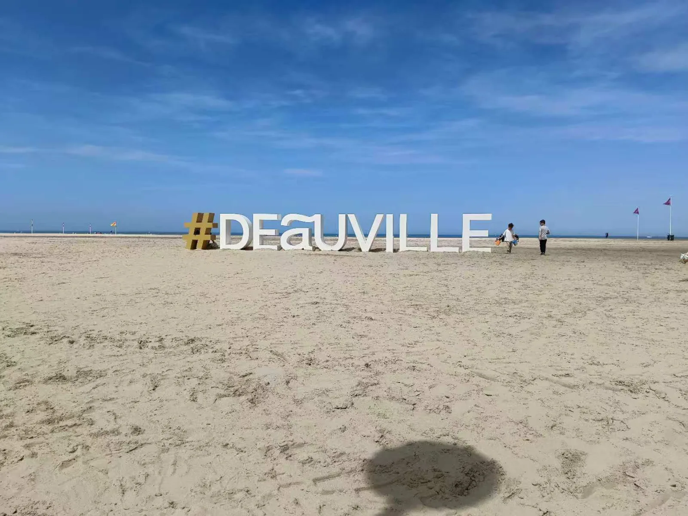

PhD student Jun Kai Ng【黄俊凯】 attended the 17th International Particle Accelerator Conference (IPAC’26), held from 17 to 22 May 2026 at the Centre International de Deauville in Normandy, France, and hosted by GANIL-SPIRAL2 together with CEA, CNRS, SOLEIL and the ESRF. IPAC is the largest conference in the accelerator field.


On Thursday 21 May he presented the poster “Current Status of the High-Repetition-Rate Electron Driven Pulsed Muon Source at the SHINE Facility” (THP3607), by Jun Kai Ng, Jia Cheng Yap and Kim Siang Khaw. It follows our IPAC’23 and IPAC’25 contributions and moves from design towards validating the electron-driven muon yield at SHINE with real data.
Unlike proton-driven sources, an electron-driven target sits in an intense background of electrons, photons and neutrons, so counting the muons requires a waveform-based analysis. The poster presents a scintillator-based positron detection scheme for identifying muon decays, an end-to-end Geant4 simulation with a mock-data analysis framework, and feasibility studies of the measurement:
- Truth-level analysis — timing and energy cuts remove the prompt and neutron backgrounds, giving a fitted lifetime of 2080 ± 53 ns, consistent with the muon lifetime.
- Mock waveform analysis — from synthesised SiPM waveforms, the muon decay signal is isolated from the prompt background and the extracted lifetime of 2.2 μs agrees with the input.
- Cosmic-muon test — with the data acquisition commissioned, the measured lifetime of 2.2 μs agrees with the PDG value, validating the hardware.
The conclusion: the simulation pipeline and detector are verified and ready for a beam test at SHINE.






Read more about the SHINE muon source and our earlier design studies in Phys. Rev. Accel. Beams 28, 083401 (2025).
博士研究生黄俊凯参加了第十七届国际粒子加速器会议（IPAC’26）。会议于2026年5月17日至22日在法国诺曼底多维尔国际会议中心举行，由GANIL-SPIRAL2联合CEA、CNRS、SOLEIL和ESRF共同主办。IPAC是加速器领域规模最大的国际会议。
5月21日（周四），他展示了题为“SHINE装置高重频电子驱动脉冲缪子源研究现状”（THP3607）的墙报，作者为黄俊凯、叶嘉诚和许金祥。该工作是课题组IPAC’23和IPAC’25工作的延续，标志着研究重点从设计阶段转向利用真实数据验证SHINE电子驱动缪子产额。
与质子驱动的缪子源不同，电子驱动靶处于电子、光子和中子构成的强本底环境中，因此缪子计数需要基于波形的分析方法。墙报介绍了用于鉴别缪子衰变的闪烁体正电子探测方案、端到端的Geant4模拟与模拟数据分析框架，以及测量的可行性研究：
- 真值层面分析——通过时间和能量选择去除瞬发本底和中子本底，拟合得到的寿命为2080 ± 53 ns，与缪子寿命一致。
- 模拟波形分析——基于合成的SiPM波形，从瞬发本底中分离出缪子衰变信号，提取的寿命为2.2 μs，与输入值相符。
- 宇宙线缪子测试——数据获取系统完成调试后，测得的寿命为2.2 μs，与PDG值一致，验证了硬件系统。
结论：模拟流程和探测器均已验证，可在SHINE开展束流测试。
了解更多关于SHINE缪子源的信息，以及我们此前发表于Phys. Rev. Accel. Beams 28, 083401 (2025)的设计研究。